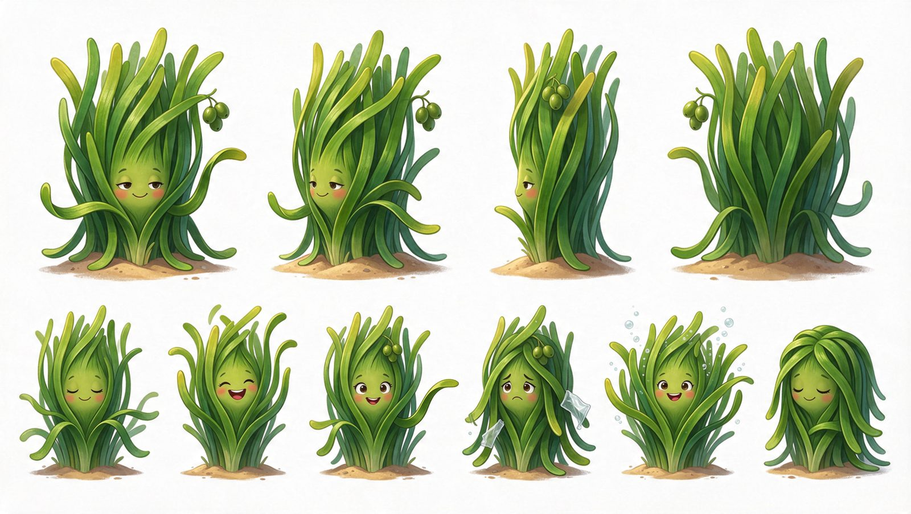

Doña Posi
Posidonia, Mediterráneo
Personalidad
Serena, maternal, habla despacio.
Pasatiempo
Sopas de letras en su pradera.
Dato real
La posidonia es una planta, no un alga; da oxígeno y protege la costa.
Diversidad
No todos los seres vivos se mueven, y todos importan.
Diseño: planta enraizada en la arena, sin brazos ni pies. No cambia de color: se expresa con la cara y el movimiento de las hojas. Lleva olivas de mar, sus frutos, como adorno.